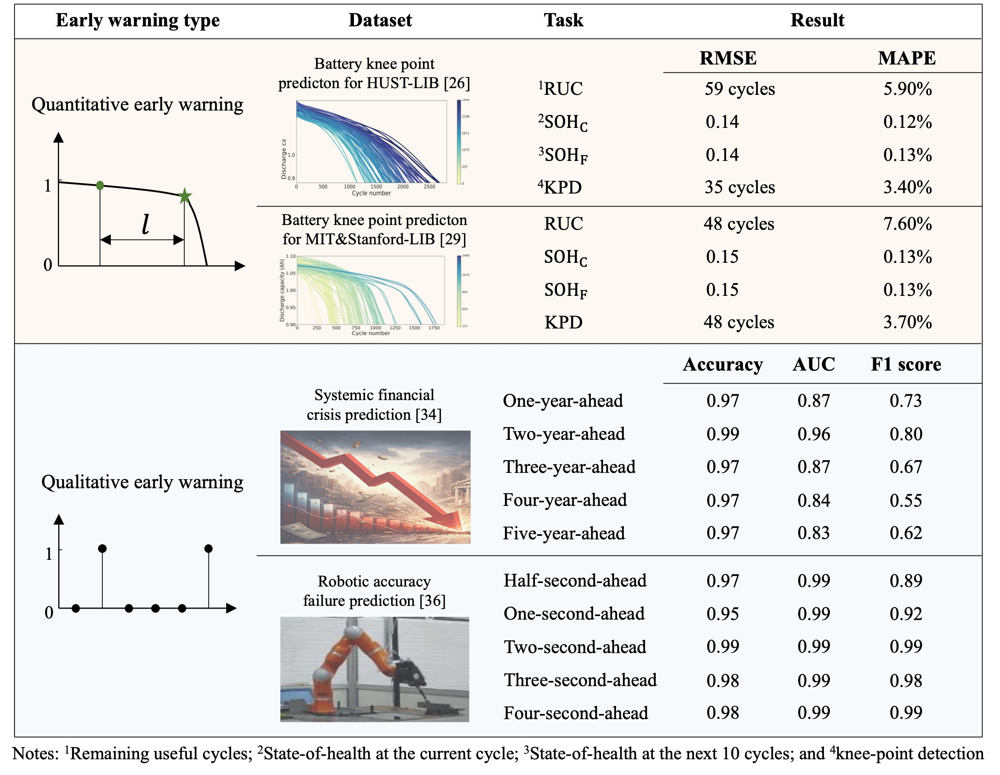
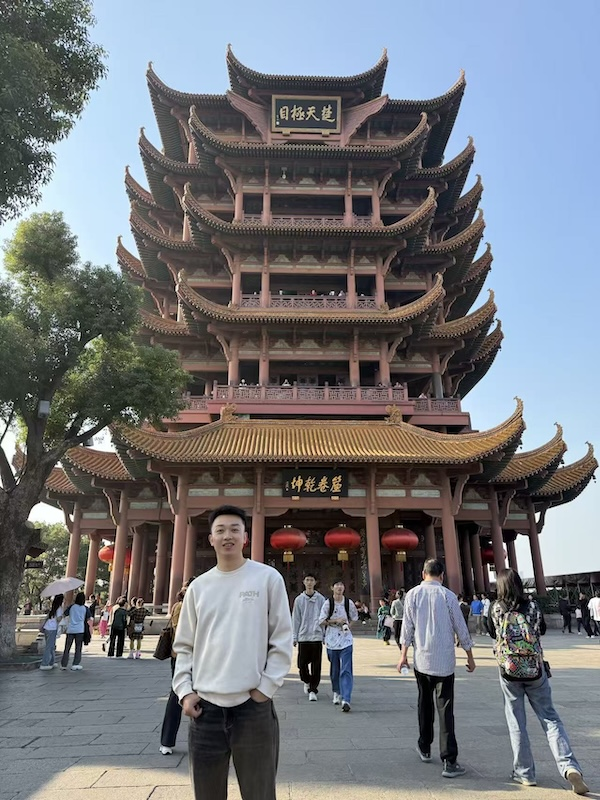
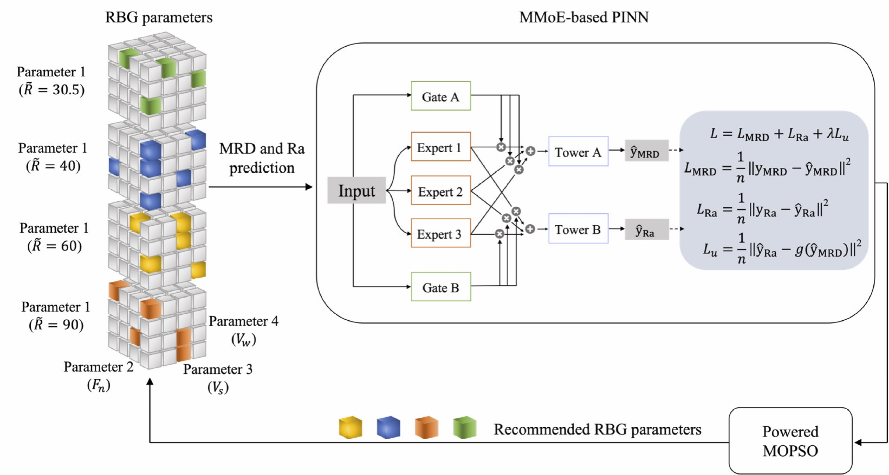
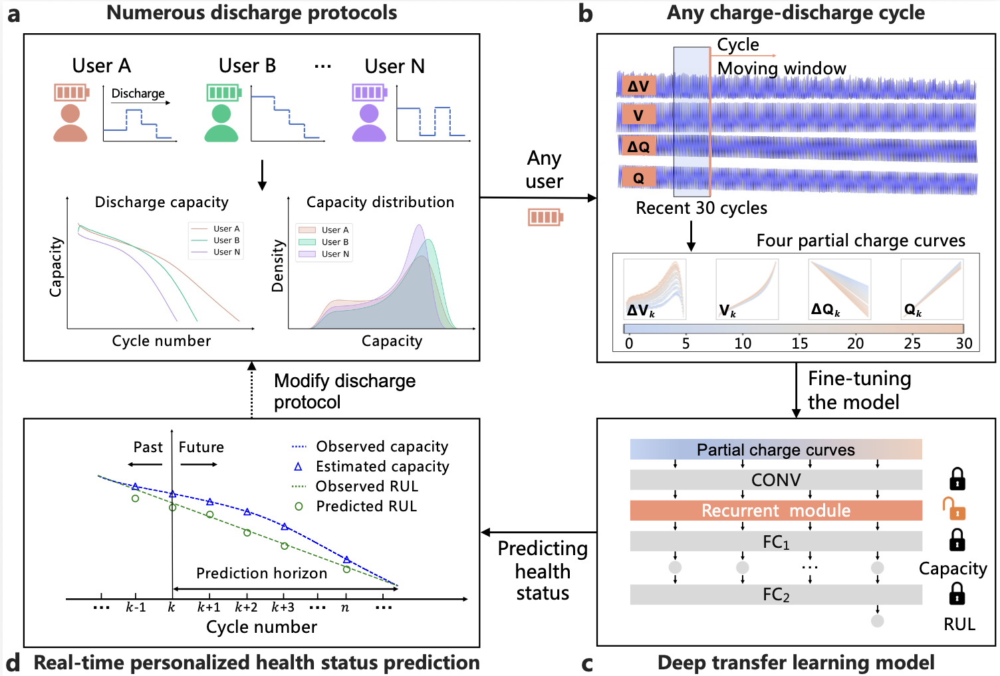
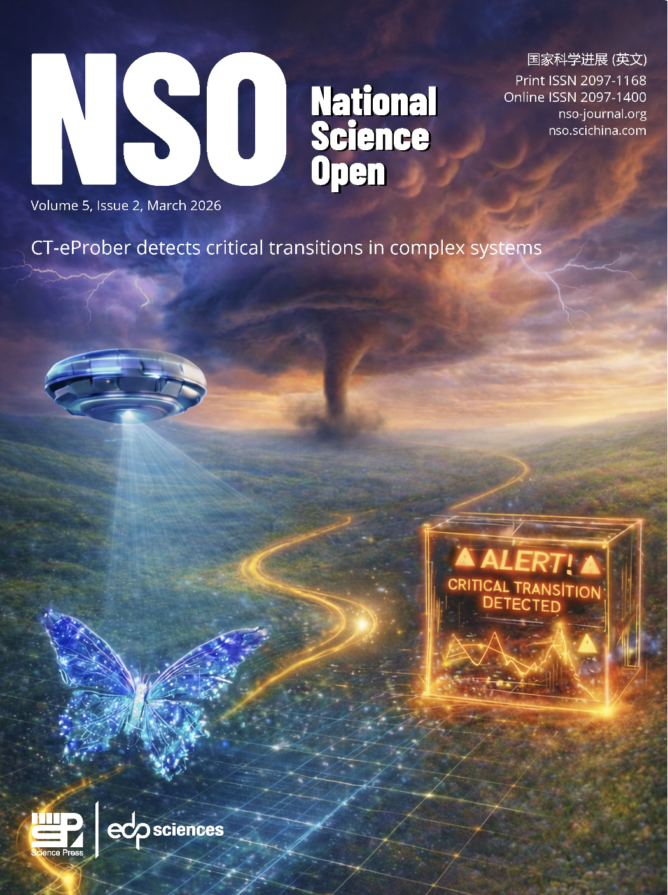
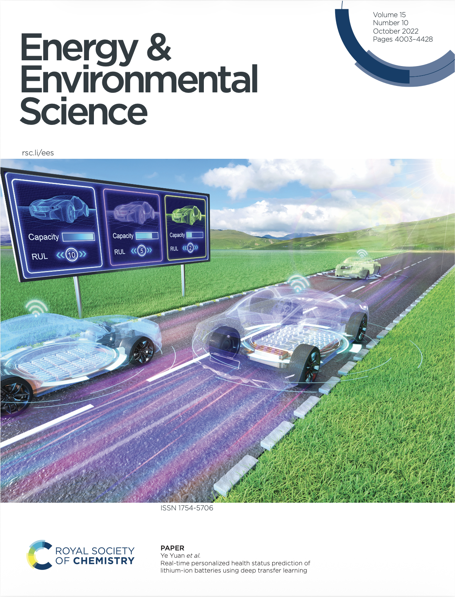

Real-time critical transition discoveries with large language models
Guijun Ma, Zidong Wang, Yuzhe Wang, Yong Zhang, Haitao Song, Han Ding, Ye Yuan
National Science Open, 5(2): 20250060, 2026

Physical AI Lab, School of Artificial Intelligence and Automation
Huazhong University of Science and Technology (HUST)
I develop learning methods for intelligent systems that interact with the physical world. My research connects Physical AI and transfer learning, with applications in generalized robot learning and intelligent manufacturing.
My goal is to enable robots and industrial systems to recognize hidden physical states, learn transferable dynamics, and make reliable decisions under limited data and changing environments.
Email: mgj@hust.edu.cn
Office: School of Artificial Intelligence and Automation, HUST, Wuhan, China
Physics-informed learning, latent-state modeling, uncertainty, and reliable adaptation under distribution shift.
Contact-rich manipulation, visual–tactile learning, mobile manipulation, and cross-task skill transfer.
Robotic machining, process prediction, calibration, and closed-loop optimization.
State-of-health estimation, remaining-useful-life prediction, and personalized battery prognostics.

Guijun Ma, Zidong Wang, Yuzhe Wang, Yong Zhang, Haitao Song, Han Ding, Ye Yuan
National Science Open, 5(2): 20250060, 2026

Guijun Ma, Zidong Wang, Weibo Liu, Zeyuan Yang, Desheng Huang, Han Ding
IEEE Transactions on Automation Science and Engineering, 22: 22410–22422, 2025

Guijun Ma, Songpei Xu, Benben Jiang, Cheng Cheng, Xin Yang, Yue Shen, Tao Yang, Yunhui Huang, Han Ding, Ye Yuan
Energy & Environmental Science, 15: 4083–4094, 2022

National Science Open · Cover Article
2026

Energy & Environmental Science · Cover Article
2022
More to come
Future cover features, best-paper recognition, and selected research stories will appear here.
Guijun Ma has been a Lecturer at the School of Artificial Intelligence and Automation, Huazhong University of Science and Technology (HUST), since Apr. 2026.
Prior to his current appointment, he worked as a Postdoctoral Researcher at HUST from 2023 to 2025. He received his B.Eng. degree and Ph.D. degree from HUST in 2017 and 2023, respectively. His doctoral research was jointly supervised by Prof. Han Ding and Prof. Ye Yuan. From 2021 to 2022, he was a Visiting Scholar in the Department of Computer Science at Brunel University London, supervised by Prof. Zidong Wang.
He currently serves as an Associate Editor of Electronics Letters. He has received the Best Paper Award from National Science Review and consecutive Best Paper Awards at the International Conference on Advanced Control and Artificial Intelligence (ICACAI) in 2025 and 2026.
He welcomes international collaboration on physical intelligence, transferable robot skills, visual–tactile manipulation, mobile manipulation in confined environments, and trustworthy industrial AI.